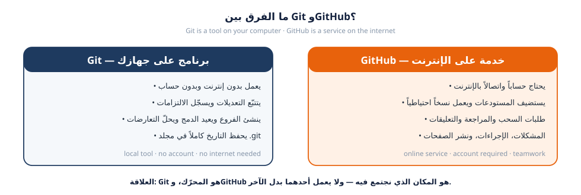
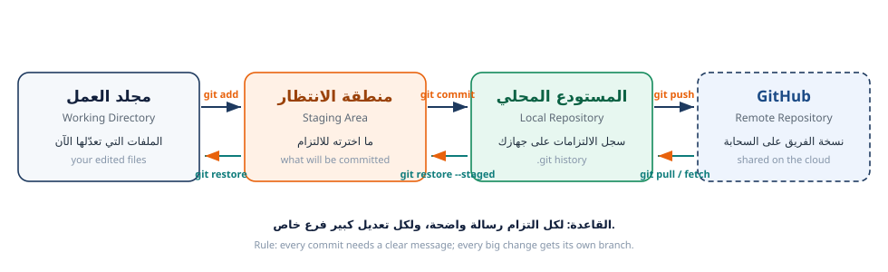

هذه الورقة عملية بالكامل: لا تُقرأ فقط، بل تُنفَّذ خطوة بخطوة على جهازك. كل مهمة تحتوي على: هدف واضح، أوامر جاهزة للنسخ، ومكاناً مخصّصاً تلصق فيه مخرجات الأوامر (نسمّيها الأدلة)، ثم قائمة فحص قبل التسليم. عند إكمال كل المهام ستملك حساباً جاهزاً على GitHub ومستودعاً يعمل على جهازك — وهما أساس كل الجلسات التالية.
This worksheet is hands-on: you do every step on your own machine. Each task gives you a clear objective, copy-ready commands, and a space to paste your command output as evidence, followed by a checklist. By the end you will have a working GitHub account and a local repository — the foundation for every later session.
commit وأول push بنجاح.git status وgit log وربطها بالواجهة الرسومية.Git برنامج مجاني مفتوح المصدر يعمل على جهازك، يتتبّع كل تعديل تجريه على ملفات المشروع، ويحفظ التاريخ بشكل نقاط تحقّق (Commits) يمكن الرجوع إليها في أي وقت. أما GitHub فهو موقع إلكتروني يستضيف مستودعات Git على الإنترنت، ويضيف فوقها طبقة تعاون: طلبات السحب (Pull Requests)، المراجعة (Review)، المشكلات (Issues)، والصلاحيات.
Git is a free, open-source tool that runs on your computer. It tracks every change you make and stores history as checkpoints called commits. GitHub is a website that hosts Git repositories online and adds a collaboration layer on top: pull requests, code review, issues, and permissions.

دليل سريع: إذا كان الأمر يبدأ بـ git فهو يعمل على جهازك؛ وإذا كان يتطلب فتح الموقع
أو يتضمن كلمة origin فهو يتعامل مع GitHub. وبدون Git مثبّتاً على جهازك لن تستطيع
التعامل مع GitHub من سطر الأوامر إطلاقاً.
Quick test: a command that starts with git works on your machine; anything that needs the
website or mentions origin talks to GitHub. Without Git installed locally you cannot work
with GitHub from the command line at all.
كل ملف تمرّ عليه ينتقل بين ثلاث مناطق. فهم هذه الصورة يوفّر عليك ساعات من الحيرة لاحقاً، لأن 90% من رسائل Git الغامضة تعني ببساطة: «هذا الملف في منطقة، وأنت تحاول تنفيذ أمر يخصّ منطقة أخرى».
Every file moves through three areas. Understanding this picture saves hours of confusion later, because most cryptic Git messages simply mean: “this file is in one area, and you are running a command that belongs to another.”

| الأمر / Command | المنطقة التي يعمل عليها | التشبيه العملي |
|---|---|---|
git status |
لا يعدّل شيئاً — يعرض الحالة | لوحة القيادة |
git add |
ينقل من مجلد العمل إلى منطقة الانتظار | تحضير الطلب |
git commit |
يحفظ من منطقة الانتظار إلى المستودع المحلي | تسليم الطلب |
git push |
يرفع من المستودع المحلي إلى GitHub | إرسال الطلب للفروع |
git pull |
يجلب من GitHub إلى جهازك | استلام تحديثات الزملاء |
git push وحده لا يرفع أي ملف لم تلتزمه بـ git commit، وgit commit وحده لا يرفع
شيئاً إلى GitHub. الترتيب الإلزامي دائماً: add ← commit ← push.
| المصطلح | النطق التقريبي | المعنى بالعربية | English gloss |
|---|---|---|---|
| Repository | ريپازِتوري | مستودع: مجلد مشروع يتتبّعه Git | A tracked project folder |
| Commit | كومِت | التزام: نقطة تحقّق محفوظة برسالة | A saved checkpoint with a message |
| Branch | برانش | فرع: مسار عمل مستقل عن main |
An independent line of work |
| Main | مين | الفرع الرئيسي المستقر للمشروع | The stable primary branch |
| Remote | ريموت | مستودع بعيد على GitHub | A repository hosted online |
| Clone | كلون | نسخ المستودع كاملاً إلى جهازك | Copy a repo to your machine |
| Push / Pull | پوش / پُل | رفع تعديلاتك / جلب تعديلات الزملاء | Upload / download changes |
| Pull Request | پُل ريكوست | طلب سحب: اقتراح دمج فرعك بعد المراجعة | A merge proposal awaiting review |
| Merge | ميرج | دمج تعديلات فرع داخل فرع آخر | Combine branches |
| Conflict | كونفليكت | تعارض: تعديلان متضاربان على السطر نفسه | Competing edits on the same line |
| Staging | ستينچنغ | منطقة الانتظار قبل الالتزام | The pre-commit area |
| Issue | إيشو | مشكلة أو مهمة مسجّلة في المستودع | A tracked task or bug |
الهدف: أن يتعرّف الجهاز على الأمر git ويُظهر رقم الإصدار.
1) التثبيت حسب نظامك:
| النظام | الطريقة الأسهل | ملاحظة مهمة |
|---|---|---|
| Windows | حمّل من git-scm.com ثم التثبيت بالإعدادات الافتراضية | سيُضاف Git Bash — استخدمه بدل موجّه الأوامر |
| macOS | نفّذ xcode-select --install أو brew install git |
الطرفية العادية تكفي |
| Linux (Debian/Ubuntu) | sudo apt update && sudo apt install git |
الطرفية العادية تكفي |
2) افتح الطرفية (Git Bash في Windows) وتحقق من التثبيت:
$ git --version git version 2.39.5
رقم الإصدار عندك قد يختلف (2.4x أو أحدث) — المهم ألّا تظهر رسالة
command not found أو 'git' is not recognized.
3) افحص مكان التثبيت (اختياري لكن مفيد عند حل المشكلات):
# Windows (Git Bash) $ which git /mingw64/bin/git # macOS / Linux $ which git /usr/bin/git
الصق مخرجات الأمر git --version كما ظهرت على جهازك:
$ git --version
اذكر نظام التشغيل الذي تستخدمه: ……………………………
إذا رأيت command not found فأغلق النافذة وافتح واحدة جديدة بعد التثبيت، ثم أعد المحاولة.
في Windows تأكد أنك تستخدم Git Bash لا cmd.
الهدف: أن تُوقّع كل التزاماتك باسمك وبريدك الصحيحين، لأن هذه البيانات تظهر للفريق في سجل المشروع ولا يمكن تصحيحها لاحقاً بسهولة.
$ git config --global user.name "سارة الحسن" $ git config --global user.email "sara@example.com" $ git config --global init.defaultBranch main $ git config --global pull.rebase true $ git config --global core.editor "code --wait"
استخدم نفس البريد المسجَّل في حساب GitHub؛ فإن اختلف البريد فلن يرتبط التزامك بحسابك على GitHub، وقد يظهر باسم غريب بلا صورة ولا إحصاءات.
تحقّق من الإعدادات ثم اختبر قراءتها:
$ git config --list user.name=سارة الحسن user.email=sara@example.com init.defaultbranch=main pull.rebase=true core.editor=code --wait $ git config user.name سارة الحسن
الصق مخرجات git config --list:
$ git config --list
الهدف: حساب جاهز للعمل الجماعي، باسم مستخدم واضح وتأمين جيد.
الخطوات:
| ✔ اسم جيد | ✘ اسم ضعيف | السبب |
|---|---|---|
sara-alhassan |
sara2009xxx |
أرقام عشوائية توحي بعدم الجدية |
omar-qa-dev |
pro_gamer_99 |
لا يوصف الدور المهني |
leen-haddad |
asdfgh |
لا يُقرأ ولا يُتذكَّر |
Settings ← Password and authentication
← Two-factor authentication ← Enable (استخدم تطبيق مصادقة مثل Microsoft Authenticator
أو Google Authenticator). احفظ رموز الاستعادة في مكان آمن — بدونها قد تفقد حسابك.طالب هندسة —
أتعلّم تطوير الويب). هذه أول ما يراه المراجع في طلب سحبك.من 2023 صار GitHub يفرض التحقق بخطوتين على من ينشر على مستودعات عامة. في هذه الورشة كل الطلاب ينشرون على مستودع مشترك، لذا 2FA شرط تسليم لا اختيار.
………………………………https://github.com/sara-alhassan): ………………………………الهدف: تمكين الجهاز من الرفع إلى GitHub دون كتابة كلمة المرور كل مرة، وبأمان.
لماذا لا تكفي كلمة المرور؟ GitHub لم يعد يقبل كلمة مرور الحساب في أوامر git. أمامك طريقان: رمز الوصول الشخصي (PAT) وهو أسهل، أو مفتاح SSH وهو الأفضل لجهازك الشخصي لأنه لا ينتهي صلاحيته.
Why not the password? GitHub no longer accepts account passwords for git commands. You have two options: a Personal Access Token (PAT) — easiest — or an SSH key, which is better on a personal machine because it does not expire.
الطريق أ — رمز الوصول الشخصي (الأسرع):
1) Settings ← Developer settings ← Personal access tokens ← Tokens (classic) 2) Generate new token (classic) 3) Note: workshop-laptop Expiration: 30 days 4) Scopes: اختر repo و read:user فقط (أقل صلاحية ممكنة) 5) Generate token ← انسخ الرمز فوراً واحفظه في مدير كلمات المرور
الرمز يظهر مرة واحدة فقط. لا تضعه في ملف داخل المستودع، ولا في محادثة، ولا في صورة شاشة. عند طلب كلمة المرور في git، الصق الرمز بدل كلمة المرور.
الطريق ب — مفتاح SSH (الموصى به):
$ ssh-keygen -t ed25519 -C "sara@example.com" Generating public/private ed25519 key pair. Enter file in which to save the key (/home/sara/.ssh/id_ed25519): Enter passphrase (empty for no passphrase): Your identification has been saved in /home/sara/.ssh/id_ed25519 Your public key has been saved in /home/sara/.ssh/id_ed25519.pub $ cat ~/.ssh/id_ed25519.pub ssh-ed25519 AAAAC3NzaC1lZDI1NTE5AAAAI... sara@example.com $ ssh -T git@github.com Hi sara-alhassan! You've successfully authenticated, but GitHub does not provide shell access.
انشر المفتاح: GitHub ← Settings ← SSH and GPG keys ← New SSH key ← الصق سطر
ssh-ed25519 ... كاملاً ← Add SSH key.
Hi <username>! You've successfully authenticated…ssh -T git@github.com أو تأكيد إنشاء PAT:$ ssh -T git@github.com
الهدف: بيئة تحرير مريحة تُظهر لك حالة Git بلمحة بصر.
| الإضافة | الفائدة |
|---|---|
Arabic Language Pack |
واجهة عربية إن رغبت |
GitLens |
يظهر لك من عدّل كل سطر ومتى (مهم في المراجعة) |
Prettier |
تنسيق تلقائي للملفات |
Live Server |
تشغيل ملف HTML مباشرة في المتصفح |
Terminal ← New Terminal (اختصار: Ctrl+ `).$ git --version git version 2.39.5 $ git config user.name سارة الحسن
| الأمر | الوظيفة | مثال |
|---|---|---|
pwd |
أين أنا الآن؟ | /c/Users/sara/projects |
ls |
ماذا يوجد هنا؟ | ls -la |
cd |
الانتقال إلى مجلد | cd class-team-hub |
cd .. |
الرجوع خطوة للخلف | |
mkdir |
إنشاء مجلد جديد | mkdir projects |
clear |
تنظيف الشاشة | |
history |
الأوامر السابقة |
الصق مخرجات pwd وls من مجلد مشاريعك:
$ pwd
قائمة الإضافات التي ثبّتها: …………………………………………………………………………
الهدف: تجربة الدورة الكاملة بنفسك على مستودع تجريبي شخصي (لم تُسلَّم بعد المستودع المشترك — سيبدأ في ورقة العمل 02).
الخطوة 1 — أنشئ مستودعاً فارغاً على GitHub:
New repository.git-practice-<اسم المستخدم> — مثال: git-practice-sara-alhassan.تديب شخصي على أوامر Git — ورشة الصف.Add a README file.Create repository.الخطوة 2 — انسخ المستودع إلى جهازك (clone):
$ cd ~/projects $ git clone https://github.com/sara-alhassan/git-practice-sara-alhassan.git Cloning into 'git-practice-sara-alhassan'... remote: Enumerating objects: 3, done. remote: Counting objects: 100% (3/3), done. Unpacking objects: 100% (3/3), done. $ cd git-practice-sara-alhassan $ ls README.md
أمر git clone أنشأ مجلداً على جهازك يحتوي على كل ملفات المستودع + مجلد مخفي اسمه
.git فيه كامل التاريخ والإعدادات. لا تحذف أو تعدّل هذا المجلد يدوياً أبداً.
الخطوة 3 — عدّل ملف README.md داخل VS Code: أضف سطرين عن نفسك.
الخطوة 4 — افحص ثم التزم ثم ارفع:
$ git status On branch main Your branch is up to date with 'origin/main'. Changes not staged for commit: (use "git add <file>..." to update what will be committed) modified: README.md $ git diff diff --git a/README.md b/README.md --- a/README.md +++ b/README.md @@ -1 +1,3 @@ # git-practice-sara-alhassan +طالبة في ورشة Git وGitHub. +أتعلّم كيف يعمل الفريق على مشروع واحد. $ git add README.md $ git commit -m "docs(readme): add a short personal introduction" [main 3f1a9c2] docs(readme): add a short personal introduction 1 file changed, 2 insertions(+) $ git push Enumerating objects: 5, done. To https://github.com/sara-alhassan/git-practice-sara-alhassan.git 9d4b1a7..3f1a9c2 main -> main
الخطوة 5 — افحص التاريخ وتأكد أن التعديل ظهر على GitHub:
$ git log --oneline 3f1a9c2 (HEAD -> main, origin/main) docs(readme): add a short personal introduction 9d4b1a7 Initial commit $ git remote -v origin https://github.com/sara-alhassan/git-practice-sara-alhassan.git (fetch) origin https://github.com/sara-alhassan/git-practice-sara-alhassan.git (push)
https://github.com/……………………/……………………git log --oneline (سطران على الأقل):$ git log --oneline
git status في اللحظة الأخيرة (يجب أن تكون نظيفة):$ git status
تكون المهمة مكتملة عندما ترى على صفحة مستودعك في GitHub آخر التزام باسمك ورسالتك، من دون أي رسالة خطأ في الطرفية.
س1. ما الفرق بين git add وgit commit؟ اذكر ماذا يحدث في كل خطوة ولماذا نحتاجهما معاً.
س2. لو رفعت تعديلاً إلى GitHub ثم فتح زميلك المتصفح ولم يرَ أي تغيير، فما الاحتمالان الأكثر شيوعاً؟
س3. اكتب الأمر الذي يُظهر: (أ) حالة المشروع الحالية، (ب) آخر الالتزامات في سطر واحد لكل التزام.
س4. لماذا نستخدم اسم مستخدم مهنياً وصورة واضحة في GitHub؟ اذكر سببين مرتبطين بالعمل الجماعي.
س5. ما الذي يحدث إذا استخدمت بريداً مختلفاً في git config user.email عن بريد حسابك على GitHub؟
git --version بنجاح وأظهر رقماً لا خطأ (المهمة 1)user.name وuser.email بنفس بريد GitHub (المهمة 2)clone ورُفع إليه commit (المهمة 6)| البند | ما يُسلَّم |
|---|---|
| رابط الحساب | https://github.com/……………………… |
| رابط المستودع الشخصي | https://github.com/………………………/……………………… |
| طريقة التعريف | ☐ PAT ☐ SSH |
| اسم نظام التشغيل | ……………………… |
| الوقت الذي استغرقته فعلاً | ……………………… |
في ورقة العمل 02 ستنسخ مستودع الفريق class-team-hub، وتفهم بنيته، وتشغّل موقع
الفريق على جهازك، وتجري تعديلك الأول على فرع خاص بك.